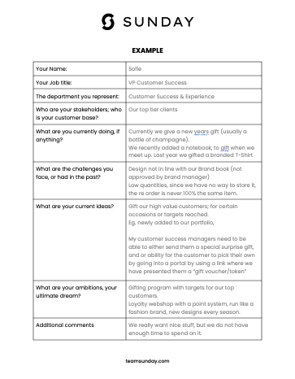

In many organizations, merchandise ordering is often managed independently by various departments such as HR, marketing, sales, and procurement. While this decentralized approach may seem efficient on a smaller scale, it can lead to several challenges, including inconsistent branding, duplicated efforts, and missed opportunities for cost savings. Centralizing merchandise efforts across departments offers numerous strategic advantages that can significantly enhance the effectiveness of your company's overall marketing and branding initiatives.
1. Why centralize merchandise across departments?
Cost efficiency and budget optimization
-
Leveraging bulk orders: By consolidating orders from various departments, your company can take advantage of bulk pricing, significantly reducing the cost per item. This allows you to either stretch your budget further or allocate savings to other strategic initiatives.
-
Streamlined processes: Centralization reduces the administrative burden on individual departments, freeing up time and resources. With a single vendor or platform managing all orders, the process becomes more efficient, and procurement can better manage budgets and track expenditures.
Consistency in branding
-
Unified brand identity: When each department orders merchandise independently, there's a risk of inconsistent branding. Different colors, logos, and messaging can dilute your brand's identity, leading to confusion among customers and employees. Centralization ensures that all merchandise adheres to a cohesive brand strategy, strengthening brand recognition and trust.
-
Enhanced brand perception: Consistency in merchandise not only reinforces your brand but also enhances how your company is perceived. High-quality, consistent branding across all touchpoints, including merchandise, can elevate your brand in the eyes of both internal and external stakeholders.
-
Guaranteed quality standards: when switching suppliers al the time there is a whole range of qualities that are possible. By centralising everything with 1 supplier they know what quality you want and you never have to worry about poor quality items carrying your branding anymore.
Example of the Zalando central order platform
3. Increased creativity and innovation
-
Collaborative design: When departments collaborate, they bring diverse perspectives to the table, leading to more innovative and creative merchandise solutions. This collaborative approach can result in unique, high-impact products that serve multiple purposes across the company.
-
Access to better options: Centralization often means larger orders, which can unlock higher-quality products and more customization options. This means your merchandise can be more tailored to your brand and more appealing to those who receive it.
4. Improved inventory management
-
Resource sharing: A centralized system allows for better management of inventory, enabling departments to share resources and avoid overstock or waste. For example, excess merchandise from one department's event can be repurposed for another department's needs, maximizing the use of all items.
-
Reduced waste: By having a centralized inventory, you can monitor stock levels more effectively and ensure that every piece of merchandise is used strategically, reducing the likelihood of items being discarded or forgotten in storage.
5. Strengthened interdepartmental relationships
-
Fostering collaboration: Centralizing merchandise efforts encourages departments to work together, leading to stronger relationships and better communication. This collaboration can result in shared best practices, greater innovation, and a more unified approach to achieving the company's goals.
-
Holistic strategy: When departments collaborate on merchandise, it becomes part of a broader, company-wide strategy rather than a series of isolated initiatives. This holistic approach ensures that all merchandise efforts are aligned with the company's overarching objectives.
Why now?
-
Market competitiveness: In a highly competitive market, standing out is crucial. Centralizing merchandise efforts allows your company to present a unified, strong brand image across all touchpoints, making your brand more memorable and impactful.
-
Scalability: As your company grows, so does the complexity of managing merchandise across departments. Centralization not only simplifies management but also makes scaling your efforts easier and more efficient.
Booking.com central order platform
2. How to initiate cross-departmental collaboration
Functional assessment: The first step in centralizing merchandise across departments is conducting a functional assessment. This involves identifying key stakeholders or champions within each department—those who are likely to see the benefits of centralization and are willing to participate.
-
Approach: Start by having conversations with department leaders to understand their current merchandise activities and future needs. This can be done through a simple survey or document where they outline ongoing campaigns and desired products. This assessment helps in mapping out the full scope of merchandise activities within the company.
-
Leadership: Typically, a champion from the marketing department or a cross-functional role leads this initiative, working closely with our team at Sunday. This internal champion is crucial for driving the project forward, especially in the early stages of implementation.
Example of functional assessment questionnaire

At Sunday, we've partnered with numerous companies to streamline their merchandise strategy. With just a small input from each department, we create a clear and actionable plan tailored to your company's needs. Connect with our experts to learn how we can help you do the same.
-
Overcoming time constraints: A common obstacle to centralization is the perceived time commitment. Departments often worry that centralizing merchandise will add to their workload, but in reality, it can save significant time in the long run. With just an hour of input from each department, we can gather enough information to streamline the process. Once the initial assessment is complete, departments will spend less time on ordering and managing merchandise than before.
-
Pilot program: It's not necessary to get every department on board from the start. By successfully centralizing merchandise for just one or two departments, you can demonstrate the benefits and encourage others to join.
-
Scalable implementation: Begin with a pilot program involving a couple of departments. As the advantages become clear, other departments are likely to follow suit, making the transition smoother and more organic.
3. Streamlining processes and enhancing efficiency
One of the key benefits of centralization is the streamlining of the design and order processes.
-
Unified design workflow: Rather than undergoing multiple design briefings and approval rounds for each department's merchandise, we can streamline this into a single process. A comprehensive collection can be designed at the start of the year or quarter, ensuring that all merchandise aligns with the brand's guidelines from the outset.
-
Order Management: Once centralized, the order process is simplified. There's no need for each department to fill out vendor forms or navigate payment processes independently. This also includes streamlined payment flows, where procurement is already familiar with the vendor, reducing administrative overhead.
-
Flexibility for special requests: If a department requires specific merchandise for a unique event, we can still handle this within the centralized system. Even limited editions or small batches can be managed more efficiently, ensuring that special projects don't dilute the overall brand consistency.
Collection Human8
4. Achieving significant cost savings and budget optimization
By consolidating orders across departments, companies can achieve substantial cost savings. Centralizing merchandise ordering doesn't just save money; it also saves valuable time across departments.
-
Bulk ordering savings: For example, the difference between ordering 20 t-shirts versus 500 t-shirts can result in cost reductions of 50% to 60%. This means you could more than double the quantity of merchandise for the same budget, amplifying your brand's reach and impact.
-
Time efficiency: Consider that each department might spend a full working day on managing a single order. If there are 20 orders a year across different departments, this can total 160 hours. By centralizing, we can reduce this to as few as 16 hours, saving over 140 hours annually—a significant financial saving when calculated at an average wage.
-
Budget transparency: While orders are consolidated for cost efficiency, they can still be tracked and billed according to each department's budget. This ensures that each department benefits from the centralized pricing while maintaining clear budgetary control.
5. Final thoughts: The power of centralized merchandise
By centralizing merchandise ordering and management across departments, companies can achieve significant cost savings, streamline processes, ensure brand consistency, and foster greater collaboration. The benefits extend far beyond just the financial; they enhance brand integrity, employee engagement, and customer loyalty.
At Sunday, we specialize in helping companies navigate this centralization process, ensuring that every department's needs are met while optimizing the overall impact of merchandise on the business. Whether you're starting with a pilot program or looking to overhaul your entire approach, our expertise in merchandise centralization can help you achieve your goals efficiently and effectively.